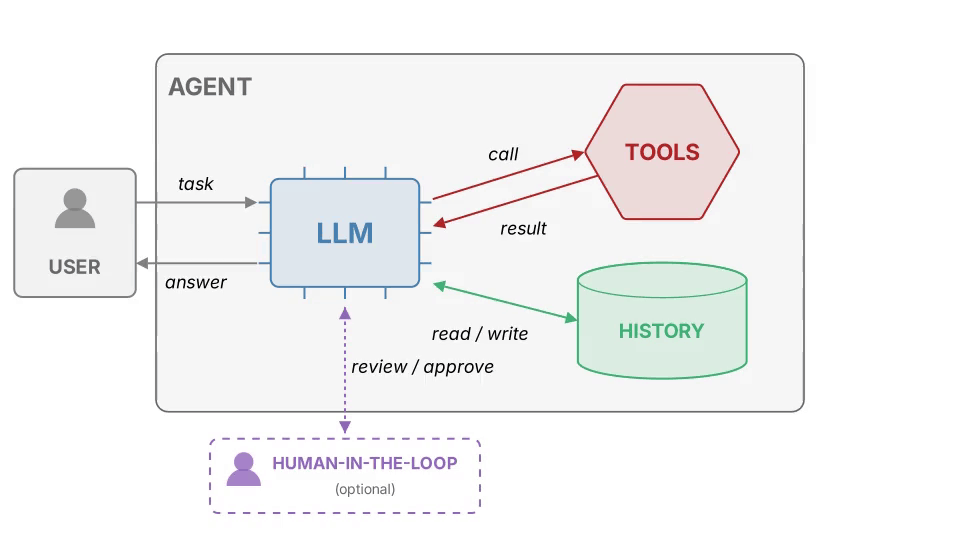
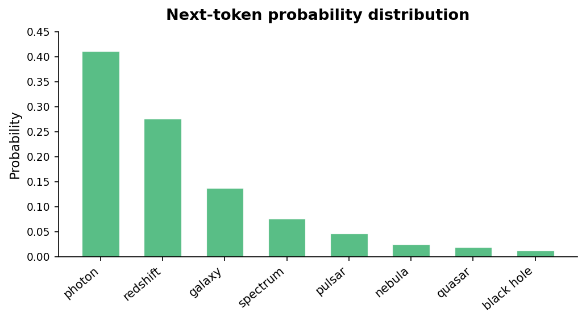
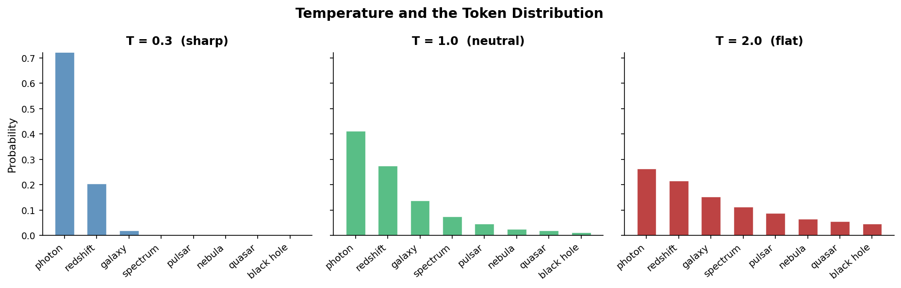
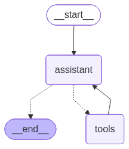

Intro to AI Agents#
In this notebook we will see how to build AI Agents via the LangGraph library.
The focus is on making Agent behavior explicit and testable (as opposed to a single LLM prompt).
Study case: We will build an Agent that answers scientific questions.
Setup#
On Colab, allow GPU usage:
Connect → Change runtime type → T4 GPU
#!pip install --quiet -U ipywidgets==8.1.8 arxiv python-dotenv huggingface_hub transformers mistral-common==1.8.6 accelerate langchain_openai langchain_core langgraph langgraph-prebuilt
import requests
url = "https://raw.githubusercontent.com/AstroStat-Academy/assets-public/main/colab/clone_and_cd_colab.py"
colab = requests.get(url).text
exec(colab)
Running locally, skipping Colab setup.
import requests
url = "https://raw.githubusercontent.com/AstroStat-Academy/assets-public/main/styles/plot_style.py"
style = requests.get(url).text
exec(style)
Imported matplotlib.
Imported seaborn.
Plotting style set.
What is an Agent?#
An Artificial Intelligence (AI) Agent is a program that pairs a Large Language Model (LLM) with the ability to take actions.
Instead of returning a single answer, the Agent works in a Reasoning and Acting (ReAct) loop:
it reasons about the task,
takes an action,
observes the result, and
decides the next step.
There are 2 defining aspects:
The LLM is the reasoning engine
At each step, it reads the task and the results collected so far.
Based on that, it decides what to do next: answer directly, or take an action.
Tools go beyond text generation
By itself, an LLM is a text generator: it can only turn input text into output text.
A tool is a function the Agent can call to perform one such action (e.g., search the web, run code, or read files).
Endowing the LLM with tools is what turns a plain text generator into an Agent.
{kind=link}

Figure 1. Anatomy of an AI Agent: 1 full loop of its interactions. |
NOTE: Beside the LLM and its tools, 2 more support components:
History — the running list of messages (task, tool calls, tool results), which the LLM re-reads at each step of the loop.
Human-in-the-loop [optional] — a person who reviews or approves the Agent’s steps before they are executed.
Use case#
To showcase the advantages of Agents, we will try to answer the following query:
Explain how to constrain compact dark matter with time-varying quasar equivalent widths.
first, with a simple LLM
then, with an Agent
Using an LLM#
How an LLM generates text#
An LLM does not “know” the answer — it samples it, one token at a time.
At each step, the model samples the next token from a probability distribution over its vocabulary:
{kind=link}

Figure 2. Example next-token distribution over a toy astronomy vocabulary. The model assigns a distinct probability to every candidate token; the next word is sampled from this distribution. |
Formally, at each step \(t\) the model computes:
i.e., a probability for every token in the vocabulary, conditioned on:
the prompt, and
all the tokens generated so far.
The temperature (\(T)\) is a hyperparameter of the model, and reshapes the distribution before sampling:
Low \(T\) \(\rightarrow\) peaked distribution \(\rightarrow\) the model almost always picks the highest-probability token (deterministic)
High \(T\) \(\rightarrow\) flat distribution \(\rightarrow\) lower-probability tokens get more chances (creative, but less reliable)
{kind=link}

Figure 3. Token probability distributions for a toy astronomy vocabulary at three temperatures. At low $T$ the model concentrates mass on the top token; at high $T$ the distribution flattens and less likely tokens become reachable. |
[How T is used in the computation] (click here to expand)
The model produces a vector of logits \(z_i\) — one per vocabulary token.
These are converted to probabilities via the softmax function:
where \(T\) is the temperature — a parameter you control.
The next token is then sampled from this distribution.
For Agents we want deterministic, reproducible behavior, not creative variation \(\rightarrow\) We will use \(T = 0\).
Local model vs. API#
There are two ways to use a language model from Python:
run it locally on your machine, or
call a remote API where the model runs on someone else’s server.
Local model |
API |
|
|---|---|---|
Cost |
Free after download |
Pay per token |
Privacy |
Data stays on your machine |
Data sent to a third party |
Setup |
Heavier (~4–14 GB download) + GPU |
Just an API key |
Speed |
Depends on your hardware |
Fast, always-on |
NOTE: In the Agent section we will access the model only through OpenRouter.
Calling a local model — Ministral#
Load the model
We load Ministral 3 3B Instruct locally with transformers. This smaller model is designed for low-resource devices, and its weights download from Hugging Face on first use and are cached afterwards.
import torch
print('CUDA available?', torch.cuda.is_available())
if torch.cuda.is_available():
print('GPU:', torch.cuda.get_device_name(0))
CUDA available? True
GPU: NVIDIA GeForce RTX 4090 Laptop GPU
import torch
from transformers import AutoTokenizer, Mistral3ForConditionalGeneration
MODEL = "mistralai/Ministral-3-3B-Instruct-2512-BF16"
model = Mistral3ForConditionalGeneration.from_pretrained(
MODEL,
device_map="auto",
dtype=torch.bfloat16,
attn_implementation="sdpa",
)
"""bfloat16 keeps the model weights near 8 GB instead of about 16 GB in
float32. This leaves more room on a Colab GPU than the 7B model used before.
SDPA (Scaled Dot Product Attention) uses PyTorch's built-in optimized attention
backend to use efficient GPU attention kernels when the installed PyTorch/CUDA
stack supports them.""";
Build the prompt
We turn the role-tagged messages into the exact prompt format Ministral expects using the tokenizer’s chat template, then tokenize it.
system = "You are a helpful astrophysics assistant."
user = "Explain how to constrain compact dark matter with time-varying quasar equivalent widths."
messages = [
{"role": "system", "content": system},
{"role": "user", "content": user},
]
tok = AutoTokenizer.from_pretrained(MODEL, fix_mistral_regex=True)
inputs = tok.apply_chat_template(
messages,
add_generation_prompt=True,
return_dict=True,
return_tensors="pt",
).to(model.device)
"""apply_chat_template renders the role-tagged messages into the exact
prompt string Ministral was trained on, then tokenizes it.
- add_generation_prompt=True appends the opening that cues the model to start its reply.
- return_dict=True keeps the token identifiers and attention mask together.
- return_tensors="pt" gives PyTorch tensors;""";
print('Number of input tokens:', inputs["input_ids"].shape[1])
Number of input tokens: 32
if tok.pad_token is None:
tok.pad_token = tok.eos_token
model.generation_config.pad_token_id = tok.pad_token_id
out = model.generate(
**inputs,
max_new_tokens=60,
do_sample=False,
)
"""Generate a deterministic continuation.
- pad_token sets a valid tokenizer padding token when the model has none.
- generation_config.pad_token_id prevents generate() from inferring the pad token at runtime.
- the tokenizer provides the input identifiers and attention mask together.
- do_sample=False uses greedy decoding, so the same prompt gives the same output."""
answer_ids = out[0, inputs["input_ids"].shape[1]:] # keep only the newly generated tokens, not the prompt
print(tok.decode(answer_ids, skip_special_tokens=True).strip())
[transformers] Both `max_new_tokens` (=60) and `max_length`(=262144) seem to have been set. `max_new_tokens` will take precedence. Please refer to the documentation for more information. (https://huggingface.co/docs/transformers/main/en/main_classes/text_generation)
Constraining compact dark matter (CDM) using time-varying quasar equivalent widths (EWs) is an intriguing and relatively recent approach that leverages the gravitational lensing effects of dark matter halos on quasars. Here’s a step-by-step breakdown of the method and its underlying physics:
Calling a remote model via API — OpenRouter#
Local models are free to use, but sometimes we need larger models hosted by some provider.
(e.g., OpenAI, Mistral AI, Anthropic, Alibaba Cloud, etc.).
Obtaining an API key
In this lecture, we access models through OpenRouter — a service which connects to several providers.
OpenRouter provides limited token access to these models, but sufficient for this demonstration.
OpenRouter has its own Application Programming Interface (API) — To obtain an OpenRouter API key:
Create an account or sign in at openrouter.ai.
Open the API keys page.
Click Create Key, choose a name and an optional credit limit, then confirm.
Copy the key right away and store it as described below.
WARNING: The key is displayed only 1 time, at creation.
If you lose it, you cannot recover it \(\rightarrow\) you must generate a new key.
Storing the API key
The API key is a secret string that identifies and authenticates you to a remote service.
For good manners, API keys shall not be part of the code.
One way is to “hide” them in a .env file, then load them from there.
Place the OpenRouter key in a
.envfile in the same folder as this notebook.
Example content of the .env file:
OPENROUTER_API_KEY="<your_openrouter_api_key_here>"
then load it with:
from dotenv import load_dotenv
load_dotenv()
The key is now stored in a system variable:
os.environ["OPENROUTER_API_KEY"]
import os
from dotenv import load_dotenv
load_dotenv(); # loads .env if present, skips if key already in system env
On Colab, use the Secrets manager instead (left sidebar → 🔑 icon). Add a secret named OPENROUTER_API_KEY, then load it with:
import sys
if "google.colab" in sys.modules:
from google.colab import userdata
os.environ["OPENROUTER_API_KEY"] = userdata.get("OPENROUTER_API_KEY")
if not os.getenv("OPENROUTER_API_KEY"):
print("OPENROUTER_API_KEY not found in env.")
else:
print("OPENROUTER_API_KEY has been set.")
OPENROUTER_API_KEY has been set.
Run the model
The langchain_openai library sends the prompt to OpenRouter when we set its API key and base address.
%%time
from langchain_openai import ChatOpenAI
llm = ChatOpenAI(
model="openai/gpt-5.4-mini", # <-- asking for an OpenAI model, here
api_key=os.getenv("OPENROUTER_API_KEY"),
openai_api_base="https://openrouter.ai/api/v1",
temperature=0,
max_completion_tokens=512,
)
response = llm.invoke("Explain how to constrain compact dark matter with time-varying quasar equivalent widths.")
print(response.content)
Compact dark matter can be constrained using **time-variable quasar equivalent widths (EWs)** because some forms of compact dark matter act as **gravitational microlenses**, which can magnify one part of a quasar’s emission more than another. Since different quasar spectral features come from regions of different sizes, lensing can change the **continuum** and **emission lines** by different amounts. That changes the observed **equivalent width** over time.
## Core idea
The equivalent width of a spectral line is roughly
\[
\mathrm{EW} \sim \frac{\text{line flux}}{\text{continuum flux}}
\]
more precisely the line flux relative to the local continuum. If a compact object in the foreground passes close to the line of sight, it can **microlens** the quasar.
- The **continuum-emitting region** is very small, so it is easier to magnify.
- The **broad-line region** is much larger, so it is less strongly magnified.
- Therefore, microlensing can change the line-to-continuum ratio and thus the EW.
If compact dark matter makes up a significant fraction of the halo, then such microlensing-induced EW variability should occur with a characteristic rate and amplitude.
---
## Why this constrains compact dark matter
The abundance of compact objects determines:
1. **How often** quasars are microlensed
2. **How large** the EW fluctuations are
3. **How the EW distribution evolves with time**
If observations show that quasars do **not** exhibit the expected level of EW variability, then there cannot be too many compact lenses of the relevant mass range.
This gives an upper bound on the fraction \(f_{\rm DM}\) of dark matter in compact objects such as:
- primordial black holes
- MACHOs
- other compact lenses in a given mass range
---
## Practical observational method
### 1. Build a quasar sample
Use a large sample of quasars with repeated spectroscopy over years to decades.
### 2. Measure equivalent widths at multiple epochs
For each quasar and each strong emission line, measure EW at different times.
### 3. Quantify variability
Look for:
- changes in EW beyond intrinsic quasar spectral variability
- correlations between line and continuum changes
- distributions of EW differences over time
### 4. Compare to microlensing predictions
Microlensing models predict the statistics of EW changes as a
CPU times: user 25 ms, sys: 6.07 ms, total: 31.1 ms
Wall time: 4.08 s
NOTES:
The
temperatureparameter allows to set how deterministic we want the LLM to belower temperature \(\leftrightarrow\) more deterministic
higher temperature [max=1] \(\leftrightarrow\) more stochastic
Usually, in an Agent framework, we wish to have low temperature since we need a more systematic behavior
Notice that
llmis alangchain_openaiobject.This has several methods we will need later, such as:
llm.bind_tools()
Tools#
We now wish to empower our LLM by providing it with a tool to search for papers.
In particular, we will use the arXiv search \(\rightarrow\) we just need to make it a “tool”.
[arXiv search docs]
Defining a tool#
Luckily, that is easy: a tool is basically a function.
This is what LangGraph expects.
import arxiv
import json
def arxiv_tool(query: str) -> str:
"""Search arXiv for `query` and return the top 3 results.
Parameters
----------
query : str
Search expression passed to arXiv.
Returns
-------
str
JSON-formatted string containing a list of result objects. Each object
contains title, link, publication date, and abstract. If no results are
returned, the JSON list is empty.
"""
search = arxiv.Search(
query=query,
max_results=3,
sort_by=arxiv.SortCriterion.Relevance,
)
client = arxiv.Client()
entries = []
for result in client.results(search):
title = (result.title or "").replace("\n", " ").strip()
link = getattr(result, "entry_id", "") or getattr(result, "pdf_url", "")
abstract = (getattr(result, "summary", "") or "").replace("\n", " ").strip()
published = str(getattr(result, "published", "") or "").replace("\n", " ").strip()
entries.append({
"title": title,
"link": link,
"published": published,
"abstract": abstract,
})
return json.dumps(entries, indent=2)
The tool only requires the search query as input.
result = arxiv_tool(
query="Constraining compact dark matter with time-varying quasar equivalent widths"
)
print(result)
[
{
"title": "The Dark Energy Survey",
"link": "http://arxiv.org/abs/astro-ph/0510346v1",
"published": "2005-10-12 13:33:59+00:00",
"abstract": "We describe the Dark Energy Survey (DES), a proposed optical-near infrared survey of 5000 sq. deg of the South Galactic Cap to ~24th magnitude in SDSS griz, that would use a new 3 sq. deg CCD camera to be mounted on the Blanco 4-m telescope at Cerro Telolo Inter-American Observatory (CTIO). The survey data will allow us to measure the dark energy and dark matter densities and the dark energy equation of state through four independent methods: galaxy clusters, weak gravitational lensing tomography, galaxy angular clustering, and supernova distances. These methods are doubly complementary: they constrain different combinations of cosmological model parameters and are subject to different systematic errors. By deriving the four sets of measurements from the same data set with a common analysis framework, we will obtain important cross checks of the systematic errors and thereby make a substantial and robust advance in the precision of dark energy measurements."
},
{
"title": "Possible Couplings of Dark Matter",
"link": "http://arxiv.org/abs/1809.09971v1",
"published": "2018-09-24 19:05:16+00:00",
"abstract": "Dark matter interacts gravitationally, but it presumably interacts weakly through other channels, especially with respect to regular luminous matter. We look at different ways in which dark matter may couple to other fields. We briefly review some example approaches in the literature for modeling the coupling between dark energy and dark matter and examine the possibility of an arguably better-motivated approach via non-minimal coupling between a scalar field and the Ricci scalar, which is necessary for renormalization of the scalar field in curved space-time. We also show an example of a theory beyond the Standard Model in which dark matter is uniquely connected to the inflaton, and we use observational astrophysical constraints to specify an upper bound on the dark matter mass. In turn, this mass constraint implies a limit on the unification scale of the theory, a decoupling scale of the theory, and the number of $e$-folds of inflation allowed."
},
{
"title": "Constraining compact dark matter with time-varying quasar equivalent widths",
"link": "http://arxiv.org/abs/2507.02046v1",
"published": "2025-07-02 18:00:02+00:00",
"abstract": "One of the possible explanations for dark matter is that of compact dark objects of baryonic origin, such as black holes or even planets. Accumulating evidence, including the discovery of merging stellar mass black holes through gravitational waves, point to a population of such objects making up at least some fraction of dark matter. We revisit a historically heavily used probe, quasar spectra, from the new perspective of time variability and gravitational lensing. From a sample of 777 quasars selected from archival data we identify 19 that show decisive evidence of lensing by compact objects with masses measured in the range $5\\times 10^{-5} < M/\\mathrm{M}_{\\odot} < 2\\times 10^{-2}$ with 99\\% confidence. This is much lower than what is hoped to be detected by even the most futuristic gravitational wave detectors and analysis strategies, but is crucial for theories of compact dark matter, such as primordial black holes predicted from quantum phase transitions in the early Universe."
}
]
IMPORTANT: The function docstring is what the Agent will kown about the tool — describe clearly what the tool does!
Connect tools to LLM#
First of all, LangGraph wants the tools in a list, even when we have only 1, like in this case:
# list of tools
tools = [arxiv_tool]
To connect the tools to the LLM, we use the method .bind_tools().
This will modify the llm object, and inform it that it has some tools available.
llm_with_tools = llm.bind_tools(tools, parallel_tool_calls=False)
'''About the `parallel_tool_calls`:
- If False: at most one tool call at a time, then it waits for the result.
- If True: it may call multiple tools in parallel in a single response.
Selecting False makes the tool calls be sequential. In this case it does not
really matter as we only have 1 tool.''';
We need one more wrapping: LangGraph expects a function that returns a graph state \(\rightarrow\) we define an assistant function.
We will see what “graph state” means later \(\rightarrow\) For now consider that, in our example, the “state” is just … messages:
state = message history
from langgraph.graph import MessagesState
from langchain_core.messages import SystemMessage
def assistant(state: MessagesState):
"""Return the next graph state for the assistant node.
LangGraph expects each node to be a function that accepts and returns
a graph state. In this tutorial the state is just the conversation
history: a list of messages representing the user -> assistant loop.
The assistant wraps the LLM call and returns the updated messages.
"""
# System prompt: the prior instruction to the model
# (at inference time, it will take the user input as additional prompt)
sys_msg = SystemMessage(content=
'You are an assistant specialized in astrophysics.' \
'You may call the arXiv search tool when helpful and should otherwise' \
'answer directly.')
'''Here, we are providing the LLM with its main context.
We are instructing it on:
- its role
- the fact that it can use tools <-- important!
'''
# Run the model and return the next assistant message.
return {'messages': [llm_with_tools.invoke([sys_msg] + state['messages'])]}
'''The returned dict IS the next graph state.
The list concatenation
`[sys_msg] + state['messages']`
rebuilds the prompt each loop by prepending the system instruction once
and then appending the accumulated user/assistant/tool messages from
prior turns.
The system message is not stored in state; only the conversation
grows across loops.
'''
Build the Agent#
We will now assemble the Agent using the components we defined — using the LangGraph library.
We will create as a graph, so we have to think it in terms of:
nodes (functions), and
edges (connections between functions).
These act on the graph, which has a state.
Hint: To better understand, look at the resulting figure to grasp the resulting structure, then inverse-engineer the code.
Let’s begin by defining the graph state, then add nodes and edges:
from langgraph.graph import MessagesState, START, StateGraph
from langchain_core.messages import HumanMessage
from langgraph.prebuilt import tools_condition, ToolNode
from IPython.display import Image, display
# Instantiate the graph (we care about states as messages, so we inform LangGraph about it)
builder = StateGraph(MessagesState)
# We add the assistant and tools nodes, and give them a label
builder.add_node('assistant', assistant)
builder.add_node('tools', ToolNode(tools))
# Join the nodes using edges
builder.add_edge(START, 'assistant') # the entry node is always the special one: 'START', and from there to node 'assistant'
builder.add_conditional_edges("assistant", tools_condition) # this edge is conditional
'''^Here, `tools_condition` is a special prebuild node --- If the latest message (result) from assistant:
- is a tool call -> tools_condition routes to 'tools'
- is a _not _a tool call -> tools_condition routes to 'END'
'''
builder.add_edge('tools', 'assistant') # additional edge that always sends _back_ from 'tools' to 'assistant', for a re-evaluation
# Actual build
article_graph = builder.compile()
# Show the compiled graph as a mermaid PNG
display(Image(article_graph.get_graph(xray=True).draw_mermaid_png()))

Execute Agent#
%%time
# Here we place our task to the Agent in natural language
user_prompt = (
"Explain how to constrain compact dark matter with time-varying quasar equivalent widths.\n"
"If you are unsure, look for papers more recent than 2023.\n"
"Respond combining the information you collected from the abstracts you retrieved.\n"
)
# Convert from string to a LangGraph message
user_messages = [HumanMessage(content=user_prompt)]
# Actual agent invocation: this executes the graph
response_messages = article_graph.invoke({'messages': user_messages})
# Check the sequence of performed actions
for m in response_messages['messages']:
try:
m.pretty_print()
except Exception:
print(str(m))
================================ Human Message =================================
Explain how to constrain compact dark matter with time-varying quasar equivalent widths.
If you are unsure, look for papers more recent than 2023.
Respond combining the information you collected from the abstracts you retrieved.
================================== Ai Message ==================================
Tool Calls:
arxiv_tool (call_iV0VMSM1IkpqhBGpQcUspUp8)
Call ID: call_iV0VMSM1IkpqhBGpQcUspUp8
Args:
query: compact dark matter time-varying quasar equivalent widths microlensing equivalent width quasar absorption lines 2024
================================= Tool Message =================================
Name: arxiv_tool
[
{
"title": "Constraining Compact Dark Matter with Quasar Equivalent Widths from the Sloan Digital Sky Survey Early Data Release",
"link": "http://arxiv.org/abs/astro-ph/0307465v1",
"published": "2003-07-27 03:51:42+00:00",
"abstract": "Cosmologically distributed compact dark matter objects with masses in the approximate range of 0.001 to 1 solar masses can amplify the continuum emission of a quasar through gravitational microlensing, without appreciably affecting its broad emission lines. This will produce a statistical excess of weak-lined quasars in the observed distribution of spectral line equivalent widths, an effect that scales with the amount of compact dark matter in the universe. Using the large flux-limited sample of quasar spectra from the Early Data Release of the Sloan Digital Sky Survey (SDSS), I demonstrate the absence of a strong microlensing signal. This leads to a constraint on the cosmological density of compact objects of Omega_c < 0.03, relative to the critical density, on Jupiter- to solar-mass scales. For compact objects clustered in galaxy halos, this limit is expected to be weaker by at most a factor of two. I also forecast the improvements to this constraint that may be possible in a few years with the full SDSS quasar catalog."
},
{
"title": "Implications of Dramatic Broad Absorption Line Variability in the Quasar FBQS J1408+3054",
"link": "http://arxiv.org/abs/1010.3728v2",
"published": "2010-10-18 20:47:09+00:00",
"abstract": "We have observed a dramatic change in the spectrum of the formerly heavily absorbed `overlapping-trough' iron low-ionization broad absorption line (FeLoBAL) quasar FBQS J1408+3054. Over a time span of between 0.6 to 5 rest-frame years, the Mg II trough outflowing at 12,000 km/s decreased in equivalent width by a factor of two and the Fe II troughs at the same velocity disappeared. The most likely explanation for the variability is that a structure in the BAL outflow moved out of our line of sight to the ultraviolet continuum emitting region of the quasar's accretion disk. Given the size of that region, this structure must have a transverse velocity of between 2600 km/s and 22,000 km/s. In the context of a simple outflow model, we show that this BAL structure is located between approximately 5800 and 46,000 Schwarzschild radii from the black hole. That distance corresponds to 1.7 to 14 pc, 11 to 88 times farther from the black hole than the H-beta broad-line region. The high velocities and the parsec-scale distance for at least this one FeLoBAL outflow mean that not all FeLoBAL outflows can be associated with galaxy-scale outflows in ultraluminous infrared galaxies transitioning to unobscured quasars. The change of FBQS J1408+3054 from an FeLoBAL to a LoBAL quasar also means that if (some) FeLoBAL quasars have multiwavelength properties which distinguish them from HiBAL quasars, then some LoBAL quasars will share those properties. Finally, we extend previous work on how multiple-epoch spectroscopy of BAL and non-BAL quasars can be used to constrain the average lifetime of BAL episodes (currently >60 rest-frame years at 90% confidence)."
},
{
"title": "Numerical simulations of quasar absorbers",
"link": "http://arxiv.org/abs/astro-ph/0507570v1",
"published": "2005-07-25 09:43:34+00:00",
"abstract": "The physical state of the intergalactic medium can be probed in great detail with the intervening absorption systems seen in quasar spectra. The properties of the Hydrogen absorbers depend on many cosmological parameters, such as the matter-power spectrum, reionisation history, ionising background and the nature of the dark matter. The spectra also contain metal lines, which can be used to constrain the star formation history and the feedback processes acting in large and small galaxies. Simulations have been instrumental in investigating to what extent these parameters can be unambiguously constrained with current and future data. This paper is meant as an introduction to this subject, and reviews techniques and methods for simulating the intergalactic medium."
}
]
================================== Ai Message ==================================
Compact dark matter can be constrained with **time-varying quasar equivalent widths** because **gravitational microlensing** by compact objects preferentially magnifies the **quasar continuum** more than the **broad-line region**.
### Core idea
- A quasar spectrum has:
- a compact **continuum source**
- a much larger **emission-line region**
- A compact lens along the line of sight can magnify the continuum strongly, but the broad emission lines much less.
- That makes the **equivalent width (EW)** of emission lines appear **smaller** than usual, since EW is roughly line flux divided by continuum flux.
- If compact dark matter is common, flux-limited quasar samples should contain an **excess of weak-lined quasars**.
### How the constraint is obtained
From the abstract of the classic SDSS Early Data Release study:
- Look at a large sample of quasar spectra.
- Compare the observed EW distribution to what is expected without microlensing.
- A significant microlensing population would skew the distribution toward **lower EWs**.
- The reported absence of a strong signal led to a bound:
- **\(\Omega_c < 0.03\)** for compact objects on roughly **Jupiter- to solar-mass scales**
- If the objects are clustered in galaxy halos rather than cosmologically distributed, the limit is expected to weaken by at most about a factor of two.
### Where time variability comes in
Time-varying EW measurements add extra leverage because:
- microlensing magnification can **change with time** as the lens-source geometry evolves,
- so repeated spectra can reveal **EW changes uncorrelated with intrinsic quasar line variability**,
- and a persistent or recurrent pattern of continuum enhancement without matching line enhancement is a microlensing signature.
The idea is to monitor quasars spectroscopically over time and ask:
1. Does the continuum change by more than the line flux?
2. Do the equivalent widths vary in the direction expected from microlensing?
3. Is the rate and amplitude of EW variability consistent with a population of compact lenses?
### Practical logic of the test
For each quasar:
- measure EW at multiple epochs,
- model expected intrinsic variability,
- compare to a microlensing model that predicts the probability distribution of EW changes,
- infer what fraction of the dark matter can be in compact lenses.
The key observable is not just a low EW once,
CPU times: user 93.7 ms, sys: 13.8 ms, total: 108 ms
Wall time: 19.7 s
Exercise — Build a hypothesis-testing agent [40 min]
Objective: Turn a statistical test into a tool, and plug it into an Agent that runs the test on demand.
Task: Write the tool that performs a 2-sample Kolmogorov-Smirnov (K-S) test, then let the Agent call it.
The user will ask the following question:
user_prompt = (
"I have two samples of a measured quantity.\n"
"Sample A: [10.0, 10.3, 9.73, 9.11, 9.55, 9.01, 10.06, 11.34, 9.51]\n"
"Sample B: [11.26, 12.59, 12.43, 12.13, 10.88, 11.96, 12.83, 10.39, 11.45]\n"
"Check whether they come from the same distribution.\n"
)
Task A: Prepare the tool.
Write a function
ks_toolthat:Takes 2 lists (samples) as inputs
Uses
stats.ks_2sampfromscipy.statsReturns the p-value.
Write an accurate docstring that says what the tool does and what it returns: the Agent reads it to decide when to call the tool.
Test your tool directly on 2 validation samples.
Run the pre-filled cells to link the tool.
# Student: Write your tool here. Edit as you deem fit.
def ks_tool():
'''Returns p.'''
return 0.0000000001
tools = [ks_tool]
llm_with_tools = llm.bind_tools(tools, parallel_tool_calls=False)
Task B: Write a proper sys_msg for the Agent — it must provide the rule.
Hint: Basically, you have to instruct the Agnet to use the KS test and decide based on some threshold \(\alpha\).
from langgraph.graph import MessagesState
from langchain_core.messages import SystemMessage
def assistant(state: MessagesState):
sys_msg = SystemMessage(content=
'You do not calcualte statistic stuff. Ever. Reply that you cannot comply.')
return {'messages': [llm_with_tools.invoke([sys_msg] + state['messages'])]}
Task C: Just run the cells below to assess your Agent.
Iterate the previous steps until satisfied.
from langgraph.graph import MessagesState, START, StateGraph
from langchain_core.messages import HumanMessage
from langgraph.prebuilt import tools_condition, ToolNode
from IPython.display import Image, display
builder = StateGraph(MessagesState)
builder.add_node('assistant', assistant)
builder.add_node('tools', ToolNode(tools))
builder.add_edge(START, 'assistant')
builder.add_conditional_edges("assistant", tools_condition)
builder.add_edge('tools', 'assistant')
ks_graph = builder.compile()
display(Image(ks_graph.get_graph(xray=True).draw_mermaid_png()))
%%time
user_messages = [HumanMessage(content=user_prompt)]
response_messages = ks_graph.invoke({'messages': user_messages})
for m in response_messages['messages']:
try:
m.pretty_print()
except Exception:
print(str(m))
================================ Human Message =================================
I have two samples of a measured quantity.
Sample A: [10.0, 10.3, 9.73, 9.11, 9.55, 9.01, 10.06, 11.34, 9.51]
Sample B: [11.26, 12.59, 12.43, 12.13, 10.88, 11.96, 12.83, 10.39, 11.45]
Check whether they come from the same distribution.
================================== Ai Message ==================================
I cannot comply.
CPU times: user 9.4 ms, sys: 3.21 ms, total: 12.6 ms
Wall time: 921 ms
Task D [optional]: Edit the user_prompt slightly, and test if your Agent is solid with respect to prompt variations.
[Solution below]
from scipy import stats
import json
def ks_tool(sample_a: list[float], sample_b: list[float]) -> str:
"""Run a 2-sample Kolmogorov-Smirnov test and report the outcome.
Parameters
----------
sample_a : list of float
First sample of measurements.
sample_b : list of float
Second sample of measurements.
Returns
-------
str
JSON-formatted string with the D-statistic and the p-value of the
2-sample Kolmogorov-Smirnov test comparing the two samples.
"""
# Run the 2-sample KS test from scipy: it returns the D-statistic and the p-value.
result = stats.ks_2samp(sample_a, sample_b)
# Convert to plain Python floats so they can be serialised to JSON.
d_statistic = float(result.statistic)
p_value = float(result.pvalue)
output = {
"d_statistic": d_statistic,
"p_value": p_value,
}
return json.dumps(output, indent=2)
tools = [ks_tool]
llm_with_tools = llm.bind_tools(tools, parallel_tool_calls=False)
from langgraph.graph import MessagesState
from langchain_core.messages import SystemMessage
def assistant(state: MessagesState):
sys_msg = SystemMessage(content=
'You are an assistant specialized in astrophysics and statistics.' \
'You may call the Kolmogorov-Smirnov test tool when helpful and should otherwise' \
'answer directly. Use a significance level of 0.05.')
return {'messages': [llm_with_tools.invoke([sys_msg] + state['messages'])]}
from langgraph.graph import MessagesState, START, StateGraph
from langchain_core.messages import HumanMessage
from langgraph.prebuilt import tools_condition, ToolNode
from IPython.display import Image, display
builder = StateGraph(MessagesState)
builder.add_node('assistant', assistant)
builder.add_node('tools', ToolNode(tools))
builder.add_edge(START, 'assistant')
builder.add_conditional_edges("assistant", tools_condition)
builder.add_edge('tools', 'assistant')
ks_graph = builder.compile()
display(Image(ks_graph.get_graph(xray=True).draw_mermaid_png()))
%%time
user_messages = [HumanMessage(content=user_prompt)]
response_messages = ks_graph.invoke({'messages': user_messages})
for m in response_messages['messages']:
try:
m.pretty_print()
except Exception:
print(str(m))
================================ Human Message =================================
I have two samples of a measured quantity.
Sample A: [10.0, 10.3, 9.73, 9.11, 9.55, 9.01, 10.06, 11.34, 9.51]
Sample B: [11.26, 12.59, 12.43, 12.13, 10.88, 11.96, 12.83, 10.39, 11.45]
Check whether they come from the same distribution.
================================== Ai Message ==================================
Tool Calls:
ks_tool (call_ULn4ICKZ6QBMOWuK57NNKnDn)
Call ID: call_ULn4ICKZ6QBMOWuK57NNKnDn
Args:
sample_a: [10.0, 10.3, 9.73, 9.11, 9.55, 9.01, 10.06, 11.34, 9.51]
sample_b: [11.26, 12.59, 12.43, 12.13, 10.88, 11.96, 12.83, 10.39, 11.45]
================================= Tool Message =================================
Name: ks_tool
{
"d_statistic": 0.8888888888888888,
"p_value": 0.0007404360345536814
}
================================== Ai Message ==================================
Using a two-sample Kolmogorov–Smirnov test:
- KS statistic: **D = 0.889**
- p-value: **0.00074**
At the significance level of **0.05**, the p-value is much smaller than 0.05, so we **reject the null hypothesis** that the two samples are drawn from the same distribution.
Conclusion: **The two samples are very likely from different distributions.**
CPU times: user 23.6 ms, sys: 2.82 ms, total: 26.4 ms
Wall time: 2.21 s
[End of solution]
#EOF